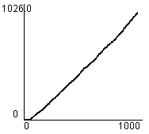
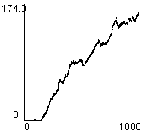

1. Editor
2. Simulator
3. Evaluation Tools
 a. Data
a. Data
 b. Statistics
b. Statistics
4. An Example Session
5. Algorithms
Statistical Tools
Analysis with simulation is easiest by switching on the tracking windows, and letting the simulation run.
As maps are initially void of road users, the first bits of data (on map Simple: about 50 to 100 cycles) are of little use.
Statistics can be shown per node, or for all nodes, for all types of road users or for specific ones (car, cyclist, bus/truck).
Toggling the in-view statistics can be an easy way to watch the queue length and see wet her the obtained data isn't malformed because road users cannot get in at some edge node, or you can keep an
eye on the Total Waiting Queue Length graph.
Guide to understanding Statistics
|
|
| (Map: Simple) Average Junction Waiting Time The first road users are able to advance quickly. After, waiting time stabilizes at 1 cycle. Check the simulator window when using such TLC as Longest Queue; one road may be blocked much more than others, and the data from that one will "drag down" the overall average. If switching to Random TLC improves the average, the infrastructure may be badly designed. |
|
| (Map: Simple) Total Road Users Arrived Rises sharply when road users meet at junction and their flow has to be regulated by halting some. Also, some may have to wait behind others at a traffic light, and have to wait more when they're first in queue. In the end, this is what you're most interested in, but the other statistics show more precisely what is wrong when the average is high. |
|
| (Map: Simple) Average Trip Waiting Time Checking the simulator window, again, will show whether this average is evenly divided, or whether there is blocking up at a junction. It may be useful to set the spawning frequencies of all but one edge node to 0, so that the flow from one source can be analyzed. When doing this, choose a TLC other than Random, as this causes waiting for road users even when there is no nee. |
|
| (Map: Simple) Total Waiting Queue Length Info value depends on the infrastructure: with only a few junctions and long roads, this fluctuates sharply. This can show whether the other statistics are giving a good insight in the performance of an algorithm, because traffic might be flowing fine, but some edge nodes might have long queues waiting outside the map to get in. |
| (Map: Complex) Average Junction Waiting Time The average here is lower than for map Simple (see above) because there are more junctions than edge nodes, and the spawning frequencies' created road users are divided more. |
|
| (Map: Complex) Total Road Users Arrived Stabilizes rigidly here after 500 cycles, perhaps because the path length is greater than the fluctuations caused by waiting. |
 |
| (Map: Complex) Average Trip Waiting Time This shows that the TLC works for this map, as it is adapting. Change spawning frequencies and see if it is able to recover, or if its adaptability was a lucky combination of spawning frequencies. |
 |
| (Map: Complex) Total Waiting Queue Length Queues are kept short most of the time, as they should be. When they are short, proportionally more road users have interaction with the traffic lights, and this may benefit overall performance. |
 |